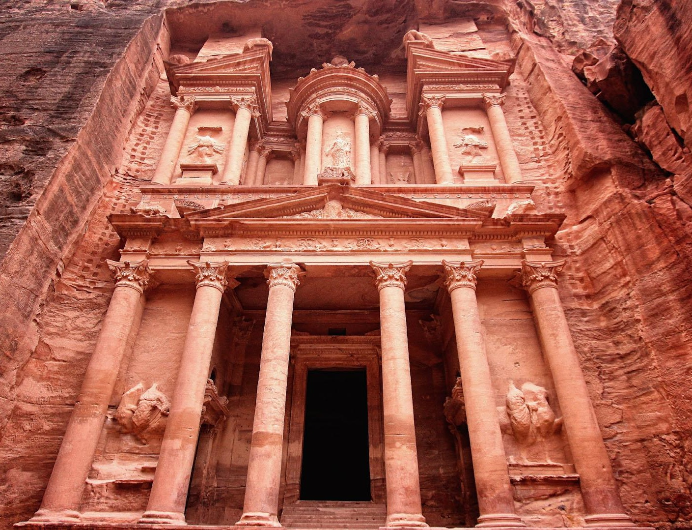

Turistas


Rausvas lyg rožė ir senas Petros miestas buvo Nabatėjų karalystės ir Romos imperijai priklausiusios Arabijos provincijos sostinė. Jis įsikūręs teritorijos, kadaise vadintos Transjordanija, pietuose. Tūnodamas kitapus Um el-Bijardos, šis miestas buvo sunkiai pasiekiamas, tačiau tokia geografinė padėtis leido tapti klestinčiu karavanų ir prekybos centru. Pro Petrą driekėsi Karalių kelias, jungiantis su Raudonąja jūra. Kiti keliai siejo miestą su Arabija, Tarpupiu (Mesopotamija) ir Viduržemio jūra. Senasis miestas glaudėsi prie kalnų grandinių. Kalnuose nabatiečiai pastatė šventyklų dievams garbinti, pavyzdžiui, Dušarą ir Alatą. Petroje buvo maldos namų (vienuolynų), turgaviečių, du amfitaetrai, daugybė tiesiog uolose iškaltų kapaviečių ir kt. Į gyvenamąją miesto dalį buvo galima įžengti tik iš rytų, išdžiūvusios Siko upės vaga. Kadaise šios upės vandenys akveduku buvo nukreipti į miestą.
